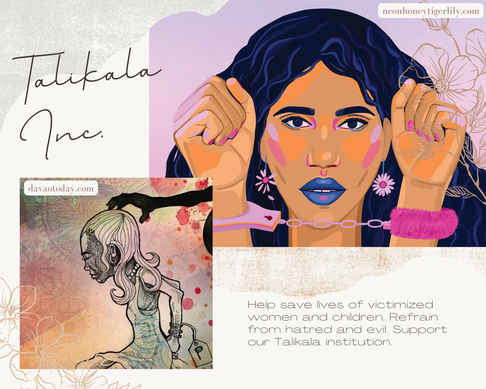
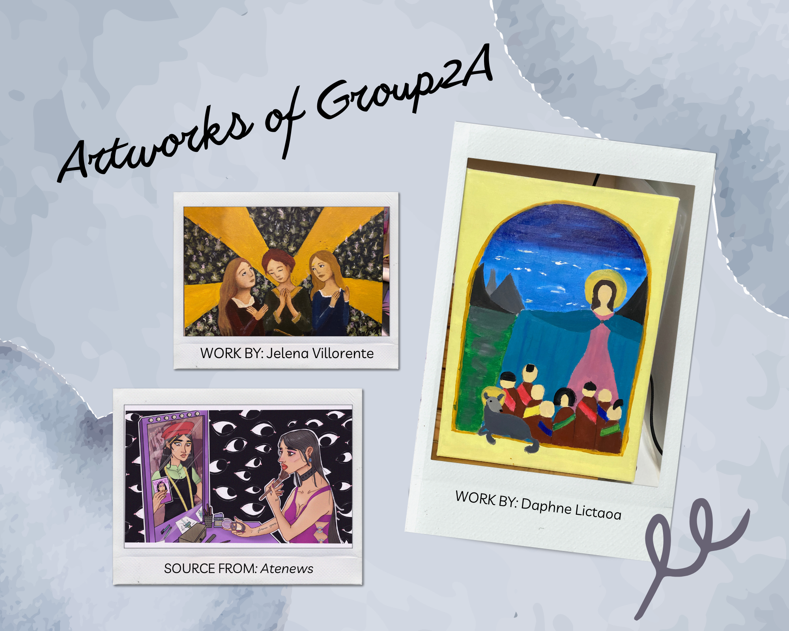
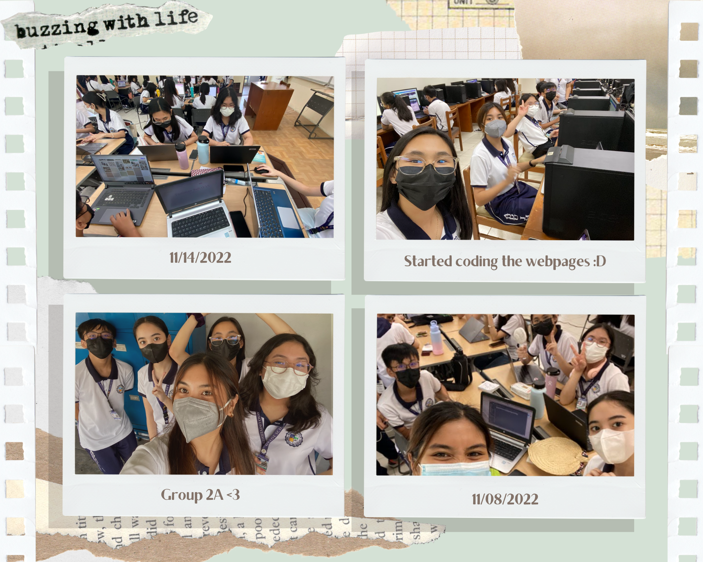
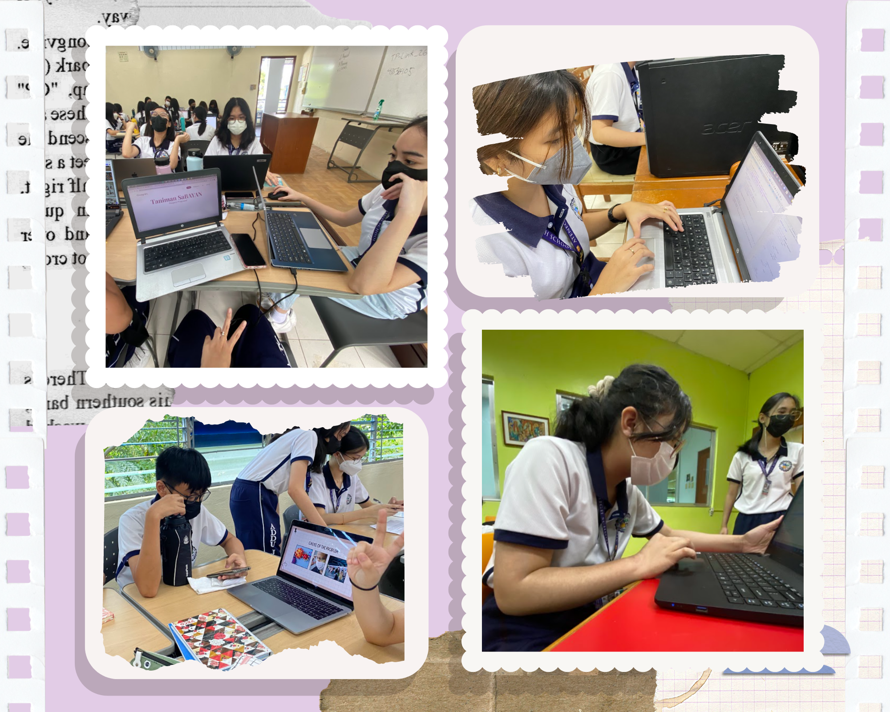

Music Feature Video
Art Gallery



Behind The Scenes
 

Juan Carlos Montenegro, a.k.a JC, is the resource manager and the main coder of Group 2A, 9 Xavier. He was born on May 29, 2008. He is also the photo editor and photographer of the Blue knights. During his spare time, you can find him playing Valorant, Overwatch, CS: GO, and Roblox. A very talented and skilled fellow he is, thus, the group’s backbone when it comes to coding.